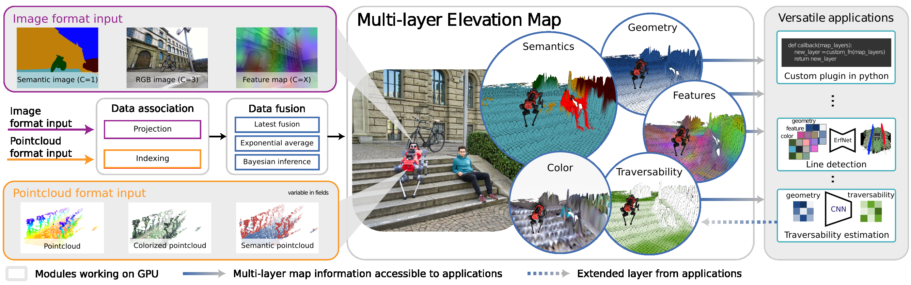

Introduction¶
The Elevaton Mapping CuPy software package represents an advancement in robotic navigation and locomotion. Integrating with the Robot Operating System (ROS) and utilizing GPU acceleration, this framework enhances point cloud registration and ray casting, crucial for efficient and accurate robotic movement, particularly in legged robots.
Used for Various Real-World Applications¶
This software package has been rigorously tested in challenging environments, including the DARPA Subterranean Challenge, demonstrating its effectiveness in complex, real-world scenarios. It supports a wide range of applications, from underground exploration to advanced research in legged locomotion and autonomous navigation.
DARPA Subterranean Challenge: This package was used by Team CERBERUS in the DARPA Subterranean Challenge.
CERBERUS in the DARPA Subterranean Challenge (Science Robotics)
ESA / ESRIC Space Resources Challenge: This package was used for the Space Resources Challenge.
Key Features¶
Height Drift Compensation: Tackles state estimation drifts that can create mapping artifacts, ensuring more accurate terrain representation.
Visibility Cleanup and Artifact Removal: Raycasting methods and an exclusion zone feature are designed to remove virtual artifacts and correctly interpret overhanging obstacles, preventing misidentification as walls.
Learning-based Traversability Filter: Assesses terrain traversability using local geometry, improving path planning and navigation.
Versatile Locomotion Tools: Incorporates smoothing filters and plane segmentation, optimizing movement across various terrains.
Multi-Modal Elevation Map (MEM) Framework: Allows seamless integration of diverse data like geometry, semantics, and RGB information, enhancing multi-modal robotic perception.
GPU-Enhanced Efficiency: Facilitates rapid processing of large data structures, crucial for real-time applications.
Overview¶
Overview of our multi-modal elevation map structure. The framework takes multi-modal images (purple) and multi-modal (blue) point clouds as input. This data is input into the elevation map by first associating the data to the cells and then fused with different fusion algorithms into the various layers of the map. Finally the map can be post-processed with various custom plugins to generate new layers (e.g. traversability) or process layer for external components (e.g. line detection).
Subscribed Topics¶
The subscribed topics are specified under subscribers parameter.
Example setup is in elevation_mapping_cupy/config/core/example_setup.yaml.
/<point_cloud_topic> ([sensor_msgs/PointCloud2])
The point cloud topic. It can have additional channels for RGB, intensity, etc.
/<image_topic> ([sensor_msgs/Image])
The image topic. It can have additional channels for RGB, semantic probabilities, image features etc.
/<camera_info> ([sensor_msgs/CameraInfo])
The camera info topic. It is used to project the point cloud into the image plane.
/<channel_info> ([elevation_map_msgs/ChannelInfo])
If this topic is configured, the node will subscribe to it and use the information to associate the image channels to the elevation map layers.
/tf ([tf/tfMessage])
The transformation tree.
The plane segmentation node subscribes to an elevation map topic ([grid_map_msg/GridMap]). This can be configured in convex_plane_decomposition_ros/config/core/parameters.yaml
Published Topics¶
For elevation_mapping_cupy, topics are published as set in the rosparam. You can specify which layers to publish in which fps.
Under publishers, you can specify the topic_name, layers basic_layers and fps.
publishers:
your_topic_name:
layers: [ 'list_of_layer_names', 'layer1', 'layer2' ] # Choose from 'elevation', 'variance', 'traversability', 'time' + plugin layers
basic_layers: [ 'list of basic layers', 'layer1' ] # basic_layers for valid cell computation (e.g. Rviz): Choose a subset of `layers`.
fps: 5.0 # Publish rate. Use smaller value than `map_acquire_fps`.
Example setting in config/parameters.yaml.
elevation_map_raw ([grid_map_msg/GridMap])
The entire elevation map.
elevation_map_recordable ([grid_map_msg/GridMap])
The entire elevation map with slower update rate for visualization and logging.
elevation_map_filter ([grid_map_msg/GridMap])
The filtered maps using plugins.
The plane segmentation node publishes the following:
planar_terrain ([convex_plane_decomposition_msgs/PlanarTerrain])
A custom message that contains the full segmentation as a map together with the boundary information.
filtered_map ([grid_map_msg/GridMap])
A grid map message to visualize the segmentation and some intermediate results. This information is also part of planar_terrain.
boundaries ([visualization_msgs/MarkerArray])
A set of polygons that trace the boundaries of the segmented region. Holes and boundaries of a single region are published as separate markers with the same color.
insets ([visualization_msgs/PolygonArray])
A set of polygons that are at a slight inward offset from boundaries. There might be more insets than boundaries since the inward shift can cause a single region to break down into multiple when narrow passages exist.